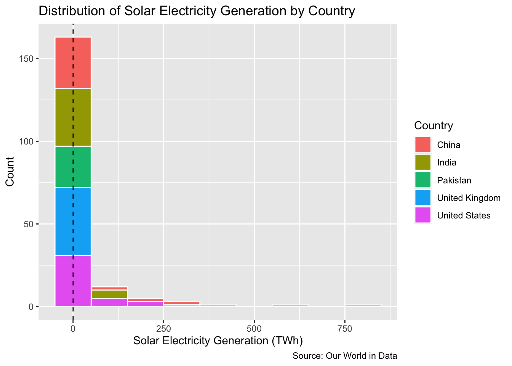
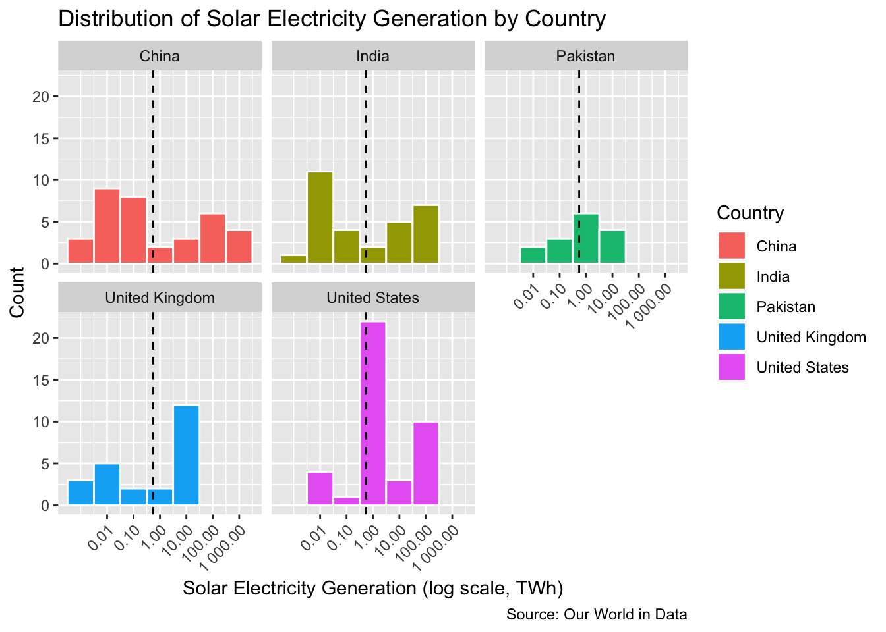
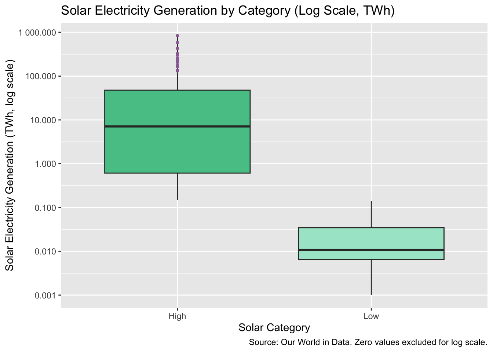
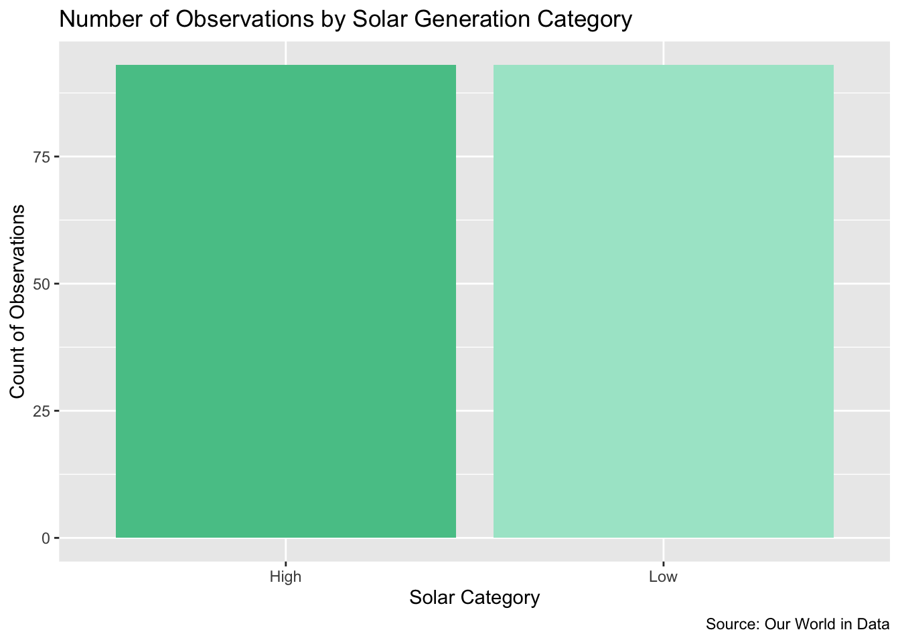

| Statistic | Value |
|---|---|
| Median (TWh) | 0.145 |
| IQR (TWh) | 6.830 |
| Standard Deviation (TWh) | 95.100 |
Introduction
This data set looks at electricity generation from different energy sources across countries over time. It comes from Our World in Data and includes sources like solar, wind, hydro power, coal, and gas. Each row represents a country in a specific year, with the amount of electricity produced from each source measured in terawatt-hours. Therefore, each observation represents a country-year. The data set spans from 1985 to 2025. Although the dataset includes multiple energy sources, this analysis focuses specifically on solar energy to better understand its growth and variation across countries. I was especially interested in looking at Pakistan, since that is where I am from, and I wanted to better understand how solar energy production has changed there over time. I also included a few other countries to compare patterns and see how Pakistan differs from or is similar to others. The final filtered dataset contains 6,715 observations across five countries. Our World in Data
Variables
The variables I will use are seen in this table.
Data Dictionary
| Variable | Type | Description |
|---|---|---|
| Country | Categorical | Name of the country (labeled as “Entity” in the dataset) |
| Year | Continuous | Year of observation |
| Solar | Continuous | Electricity generation from solar power, measured in terawatt-hours (TWh) |
The Solar variable is the main variable of interest in this analysis, as it captures the amount of electricity generated from solar energy in each country-year observation.
Data Cleaning
Before starting the analysis, I made a few small adjustments to the dataset. First, I renamed the “Entity” column to “Country” to make it clearer and easier to understand. I then filtered the dataset to include only a small group of countries so that the comparisons would be more manageable.
Since I am focusing on solar energy, I selected only the variables needed for the analysis: Country, Year, and Solar. I also checked for missing values in the Solar variable using sum(is.na(cleaned$Solar)) and found that there were 0 missing values. Because there were no missing values, no additional cleaning was needed for this variable.
Overall, the dataset was already fairly clean, so only minimal changes were needed.
Continuous Variable: Solar
The histogram of solar electricity generation on the original scale is strongly right-skewed and unimodal, with most observations concentrated very close to zero and a long tail extending toward much larger values.
Because the distribution is skewed, the median is a more appropriate measure of center than the mean. The dashed vertical line represents the median, which is 0.145 TWh. Since this value is so close to zero relative to the full range of the data, the line appears almost at zero on the plot.
The interquartile range (IQR) is 6.83 TWh, with the third quartile (Q3) at approximately 6.83 TWh, indicating that even the middle 50% of values remain relatively low. Using the 1.5 × IQR rule, values above Q3 + 1.5 × IQR ≈ 17.07 TWh are considered outliers. Several observations exceed this threshold, including China (839.04 TWh in 2024 and 584.15 TWh in 2023), the United States (303.75 TWh in 2024), and India (136.75 TWh in 2024). Even smaller values such as the United Kingdom (19.32 TWh) and Pakistan (18.15 TWh) fall just above the cutoff. These are not data errors, but reflect the rapid and dramatic growth of solar energy over time, particularly in countries like China and the United States where production has increased sharply in recent years.

To better understand how this distribution varies across countries, the data is separated using faceted histograms on a log scale, with dashed lines again representing the median.
The log transformation spreads out smaller values and makes differences easier to see. While the distributions appear more balanced on this scale, the underlying data remains right-skewed. China and the United States show the widest ranges and highest values, with China reaching over 800 TWh and the United States exceeding 300 TWh, indicating high variability and rapid growth. India falls in the middle, reaching around 136 TWh, while Pakistan and the United Kingdom are tightly clustered below 20 TWh, showing lower and more stable solar production.
Overall, these faceted plots reveal that a small number of countries drive the extreme values seen in the original histogram.

Comparing Variables
The boxplot compares solar electricity generation between observations below and above the median threshold of 0.145 TWh, labeled as “Low” and “High.” To make differences in spread more visible, a log scale is applied to the y-axis, since the data ranges from values close to zero to over 800 TWh.
Because log scales cannot display zero, zero values were excluded from the visualization but retained in the overall analysis.
The Low group has a median of approximately 0.011 TWh and is tightly clustered near zero, indicating consistently low solar production with little variation and few to no outliers. In contrast, the High group has a much larger median of approximately 7.09 TWh and a significantly wider spread. Outliers for the High group were calculated using the 1.5 × IQR rule and added manually to ensure they remain visible on the log scale. These include extreme values from countries such as China, the United States, and India, reflecting rapid growth in solar energy production.
Overall, the High group shows both greater variability and more extreme values, highlighting how unevenly solar electricity generation is distributed across observations.

Categorical Variable
Since the dataset does not include a natural categorical variable, I created one by dividing solar electricity generation into “High” and “Low” categories using the median value of 0.145 TWh as the threshold. This threshold is meaningful because it splits the data into two equal-sized groups, allowing for direct comparison between lower and higher levels of solar production.
The bar chart shows that the number of observations in the High and Low categories is nearly equal. While this may seem trivial, it is a direct result of using the median as the cutoff, which ensures that approximately half of the observations fall into each group. This balanced distribution is useful because it prevents one category from dominating the analysis and allows for clearer comparisons in subsequent visualizations, such as the boxplot.
However, despite having equal counts, the two groups are not similar in magnitude. As seen in the histogram and boxplot, the High category contains much larger values and greater variability, while the Low category is tightly clustered near zero. This highlights that even though the data is evenly split by count, solar electricity generation itself is highly uneven in scale, with a small number of observations accounting for most of the total production.
